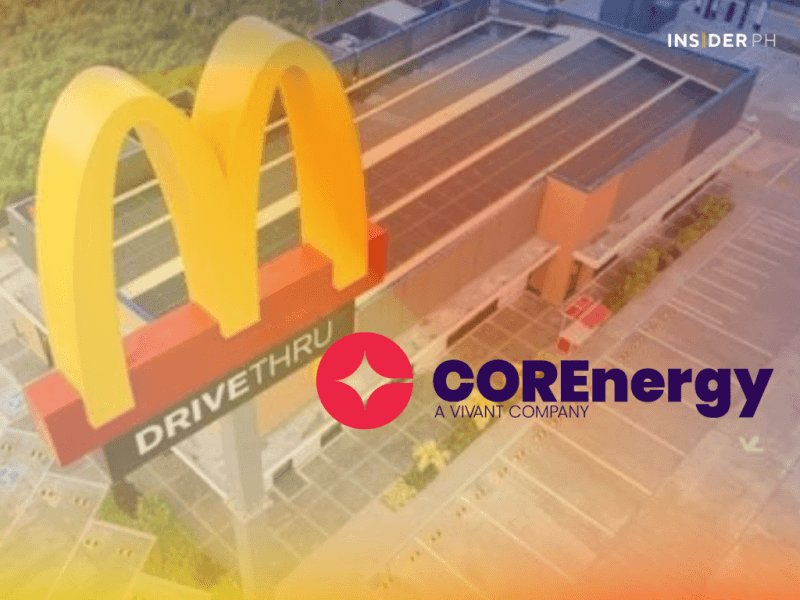
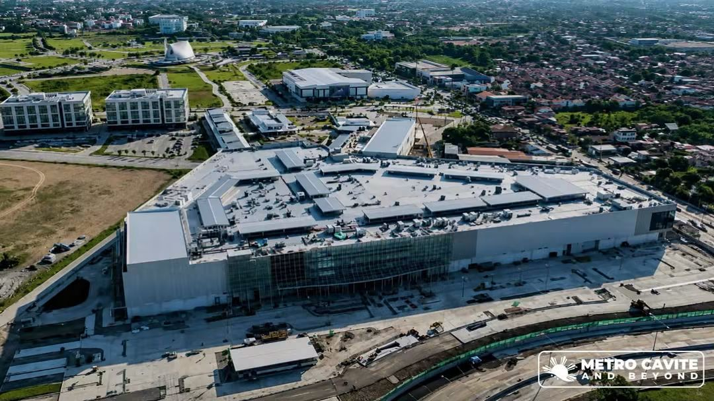
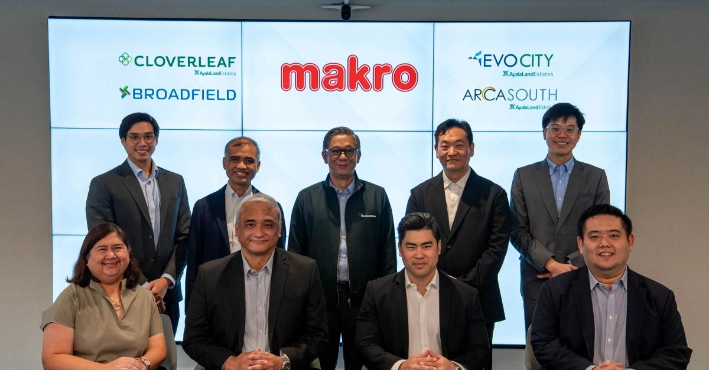
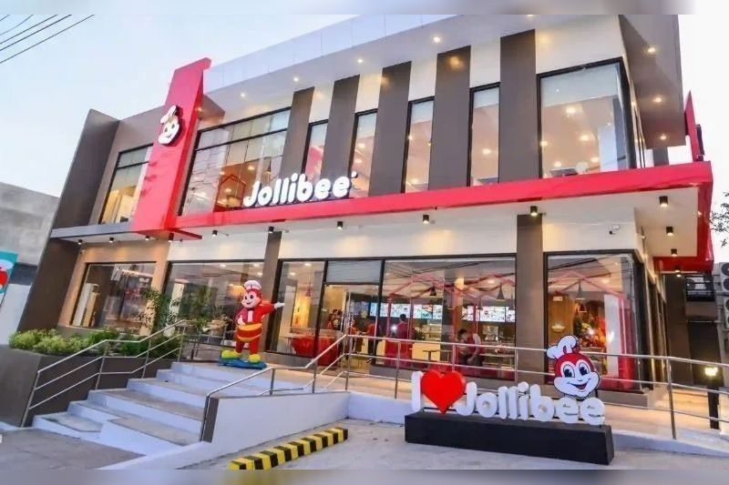

Tape
McD is buying electricity so sulit meals don’t have to move. Jollibee collects a growth trophy and keeps talking US listing for the overseas book after Iran-linked cost hits. Ayala’s Kawit mall main building is Q4; Makro rides the same south estates into Laguna and Cavite.
For Calamba: watch power as a controllable line, not just protein. Estate-edge wholesale at Broadfield is the buy; in-line at Evo City is chain fight. Bakery franchise half-and-half is how SM-scale expands without owning every lease.

McD power deal to hold sulit prices
1 Sep 2026
McDonald’s PH is expanding its COREnergy (Vivant) retail electricity deal so sulit meals can stay put while fuel bites margins. MD Margot Torres: utilities ~6–7% of sales; electricity ~72% of utility spend. Early 17 stores saved ≥10% on power (~P52k/month each). +23 VisMin stores (2.2 MW) → 59 on COREnergy; year-end goal ~64% of RAP-eligible network. PH is among McD’s 10 largest markets by store count and top-five fastest growing; 862 restaurants now, Visayas ~100 / Mindanao ~75 (~20% of network).
Open the piece

Evo City mall main building: Q4
1 Sep 2026
Ayala Malls Evo City (Kawit, Cavite) targets Q4 2026 for the main building. Phase 1 already open; full mall pitched at ~57,000 sqm retail, with Makro’s Cavite return and an Ayala Malls Playpark in the second phase. Third big Ayala lifestyle mall in Cavite after Serin (Tagaytay) and Vermosa (Imus). Estate is 200 ha, ~30–45 min from Metro Manila via NAIAX / CAVITEX / CALAX / C5 Southlink.
Open the piece

Makro back: Broadfield + Evo City
1 Sep 2026
Makro PH (Ayala Corp × CP Axtra) leased four Ayala estates: Cloverleaf (Balintawak), Broadfield (Biñan, Laguna), Arca South (Taguig), Evo City (Kawit). ALI keeps the land at Broadfield, Evo, Cloverleaf; Makro builds/operates. Cloverleaf and Arca South first; remaining stores, including Cavite, targeted Q4 2026–Q1 2027. Fresh/dry food, imports, non-food, plus e-com for households and small businesses.
Open the piece

[promo] JFC “Global Growth Champion”; US list talk
1 Sep 2026
Jollibee Group took the inaugural Globie Awards’ Global Growth Champion (74%+ of advisory votes; 12 nominees). Formal handoff at the Global Restaurant Leadership Conference in November. Network: 10,700+ stores/cafés, 20 brands, 33 countries. Same day Nikkei: JFC weighing a US listing for overseas businesses while chasing non-Filipino traffic abroad, after Iran-war fallout hit H1.
Open Philstar · Open Nikkei

Goldilocks: 50–100 opens, half franchise
1 Sep 2026
SM Group’s Goldilocks eyes up to 100 new PH stores this year; COO Jerson Go Uy: explore ~100, executable 50–100, ~30 already open, about half of planned outlets via franchise partners, year-end count “thereabouts” of 1,100 (1,000th store ~Oct 2025). Spread across provinces/cities; manufacturing footprint supports hard-to-reach sites (Siquijor, Bohol cited). No new international stores in pipeline; export push instead.
Open the piece